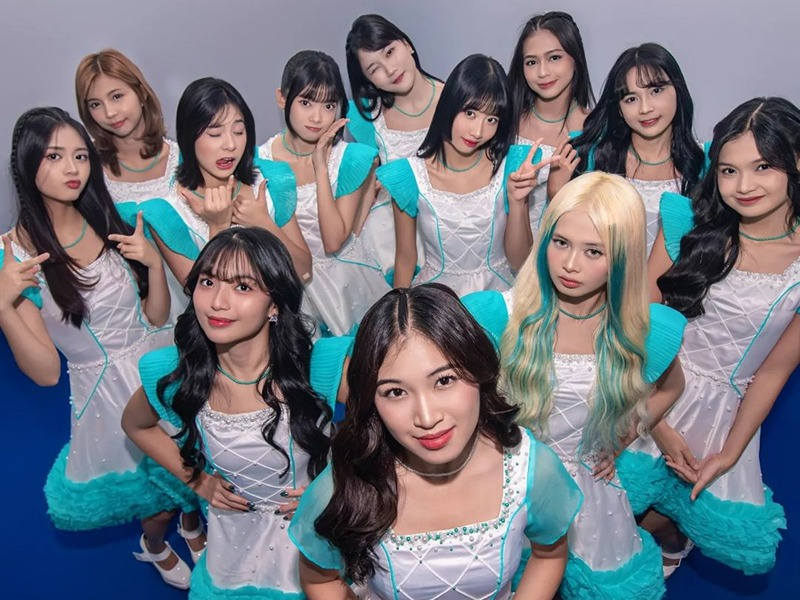
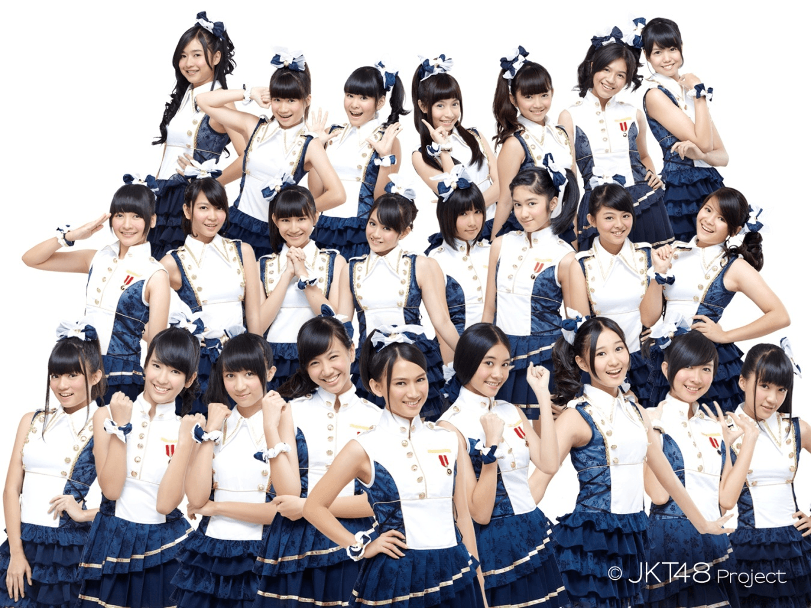

Musik
Heavy Rotation

Foortunie Cookie
Jurus Rahasia Teleport

Rapsodi

Tempat untuk mengenal lebih dekat para member JKT48 dan menunjukkan dukungan kepada oshi-oshimu!
Kenali OshimuJKT48 adalah grup idola asal Indonesia yang terinspirasi dari AKB48 di Jepang. Kami selalu berinovasi dalam musik, tarian, dan penampilan untuk para penggemar setia.
Jelajahi lagu-lagu inspiratif dan penampilan luar biasa dari JKT48.
Komunitas penggemar yang setia dan aktif mendukung perjalanan kami.
Menjadi grup idola yang terus meraih penghargaan dan cinta penggemar.
Kenali oshi-oshimu! Ini adalah tiga member favoritku yang selalu memberikan energi positif.
Peduli dan berbaik hati siapakah dia?christoy
Senyumku akan terekam jelas dalam ingatanmu seperti foto dengan sejuta warna. Namaku Gracia. Always smile
Semangat ku full terus! Gas gas gas Oline.
Lihat koleksi foto-foto terbaik dari oshi-oshimu! Nikmati pengalaman melihat foto dalam galeri yang menarik.
Tonton semua video favoritmu dari masing-masing oshi!